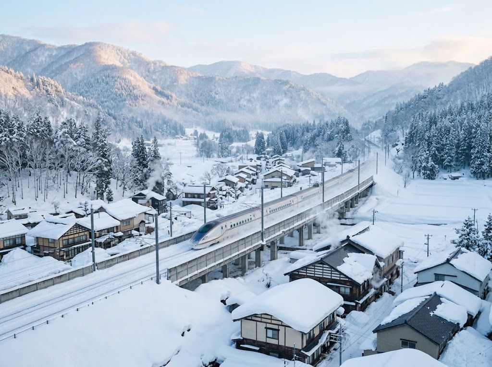

上越國際
Joetsu Kokusai新潟県 南魚沼市
Ski-in/out夜滑新手友善
本站怎麼判 湯澤圈裡 Ski-in/out、夜滑、相對好價。第一次與過夜練習場。
不適合誰：想要新幹線下車即滑、或要頂級粉雪的人。
從台灣怎麼到
- 桃園 → 羽田／成田 含機場到東京約 5.5–7 小時東京 → 越後湯澤 → 短程接駁／上越線
5 天預算帶
NT$30,000–50,0005 天 4 夜，湯澤圈裡較好價。
運行資訊
例年 12 月～4 月初。
現場坑
- 知名度被 GALA／苗場蓋過，資料較散。
- 不是一日遊第一名。
不滑雪的人
度假村可待，小鎮感一般。
這頁有錯？告訴我們